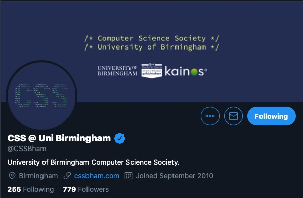

I've already proven that I can use the CSS Brand Guidelines 😉
If elected, I'll be photographing ALL of the CSS events.
You and your friends can look like this:
or this:
I don't know about you but I wanna be that guy ^. You and your friends have never looked more attractive.
Yes. That's right. Everyone's favourite feature will be added to the CSS website as soon as I'm elected.
To give you a sneak preview, I've even added a dark mode switch to this page!
Something nobody asked for and yet something that everybody has always wanted.
That's right. I'll be applying for verification on Twitter, Instagram and... why not: Facebook too!
Well, here's some serious stuff. I am: